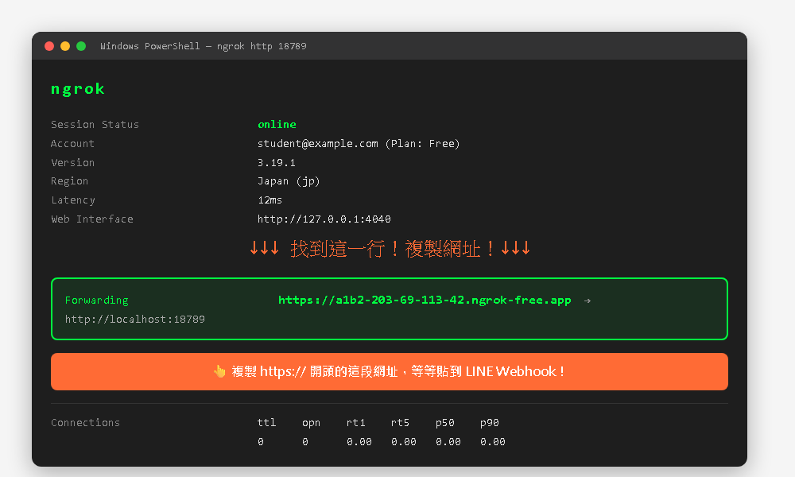
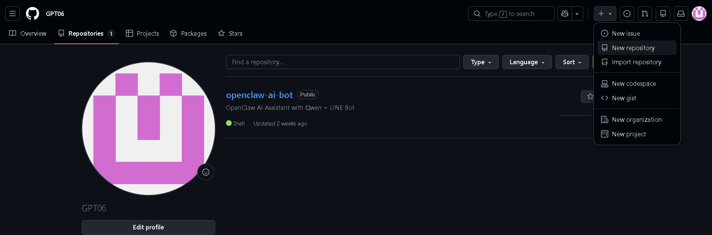
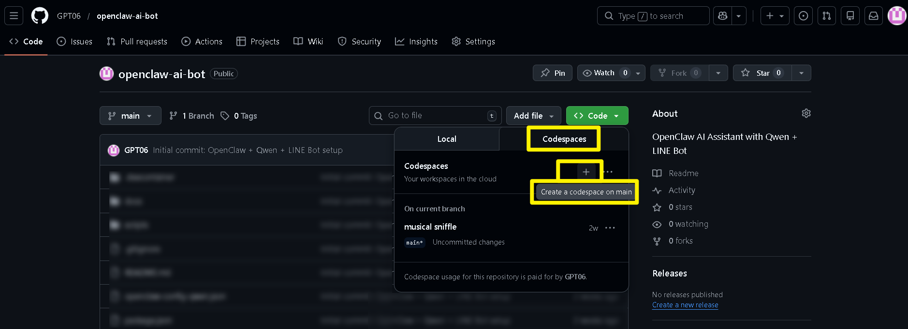
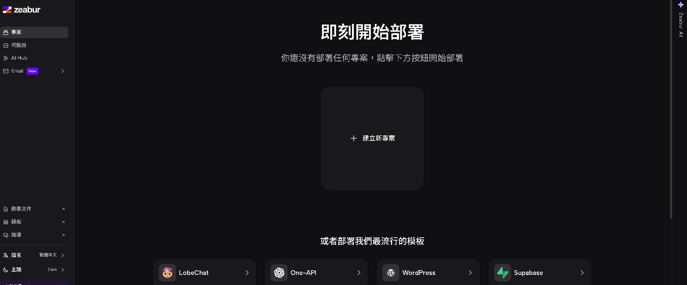
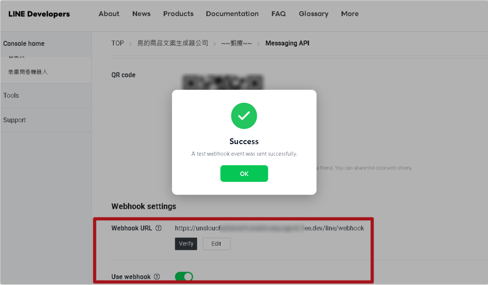
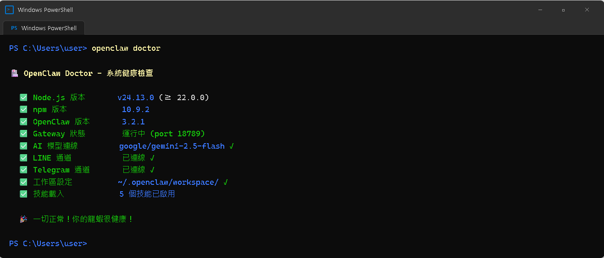

AI Agent 自主代理三王實戰
CH5 | 安裝 OpenClaw——五條路任你選
就像組裝模型有不同方法——買成品、照說明書、自己拼。安裝龍蝦也有五種路線，不管選哪條路，最後都能讓龍蝦在 LINE 裡活蹦亂跳！
📋 本章學習目標
- 了解五種安裝方式的差異，選最適合自己的
- 完成 OpenClaw 的安裝與初始化設定
- 啟動 Gateway 並透過 ngrok 讓 LINE 連接龍蝦
- 在 LINE 上成功與龍蝦對話，驗證安裝成功
5.1 五種方式，一張表看懂
就像買電腦可以買品牌機、自組、用免費零件、或租雲端主機——選最適合你的就好！
| 方式一：自動安裝 | 方式二：手動 npm | 方式三：Ollama 本地 | 方式四：Codespaces | 方式五：Zeabur 雲端 | |
|---|---|---|---|---|---|
| 適合誰 | 完全零基礎 | 有技術底子 | 有好顯卡 | 電腦太舊 | 想一鍵部署 |
| 難度 | ⭐ | ⭐⭐⭐ | ⭐⭐⭐ | ⭐⭐ | ⭐⭐ |
| 費用 | 依 AI 模型 | 依 AI 模型 | 完全免費 | 完全免費 | 免費方案可用 |
| 龍蝦跑在哪 | 你的電腦 | 你的電腦 | 你的電腦 | GitHub 雲端 | Zeabur 雲端 |
| 時間 | ~15 分鐘 | ~30 分鐘 | ~40 分鐘 | ~20 分鐘 | ~10 分鐘 |
什麼都不想管 → 方式一
有 NVIDIA 顯卡想免費 → 方式三
電腦太舊 → 方式四
想自己動手 → 方式二
想雲端一鍵 → 方式五
Windows 新手先走 方式一。
想完全手動學會每一步，再走 方式二。
沒有好電腦但有 GitHub，就走 方式四。
不要五種都試，先選一條走到底最重要。
5.2 安裝前的共同準備
不管選哪一種安裝方式，這些資料都要先準備好。如果你在 CH1 已完成帳號申請，只需要把資料找出來。
必要資料清單
| 必要資料 | 從哪裡取得 | 用在哪裡 |
|---|---|---|
| LINE Channel ID | LINE Developers Console | 讓龍蝦知道連哪個 LINE 帳號 |
| LINE Channel Secret | LINE Developers Console | 驗證訊息來源的密鑰 |
| LINE Channel Access Token | LINE Developers（點 Issue） | 龍蝦發送訊息的授權碼 |
| LINE User ID（adminUserId） | 安裝後從 Gateway log 或 Dashboard 取得 （ U 開頭 + 32 碼，可安裝後補填） | 設定龍蝦的管理員身分 |
| AI API Key 或 OAuth 帳號 | Google AI Studio / OpenAI / Anthropic | 龍蝦的大腦（OpenAI 可用 OAuth 免費登入，不需 Key） |
| ngrok Authtoken | ngrok Dashboard | 建立通道讓 LINE 連到你的電腦 |
方式三（Ollama）不需要 AI API Key。
方式四（Codespaces）不需要 ngrok Authtoken。
選擇 OpenAI OAuth 免費登入也不需要 API Key（只要有 ChatGPT 帳號就行）。
最好先打開你在 CH1 做的
龍蝦課程-帳號清單.txt。安裝過程中會一直用到：
Channel ID、Channel Secret、Channel Access Token、Gemini API Key、ngrok Authtoken。
AI 模型選擇
| AI 平台 | 推薦模型 | 費用 | 適合誰 |
|---|---|---|---|
| Google Gemini | Gemini 3 Flash | 有免費額度 | 新手首選 |
| OpenAI（API Key） | GPT-5.2 / 5.4 | 付費 | 最強中文 |
| OpenAI（OAuth 免費） | GPT-5.2（免費帳號） GPT-5.4（付費帳號） | 完全免費 | 有 ChatGPT 帳號即可 |
| Anthropic | Claude Sonnet 4.6 | 付費 | 最佳程式碼品質 |
| Ollama（本地） | Llama 3.3 70B | 完全免費 | 有好顯卡、注重隱私 |
5.3 方式一：Windows 自動安裝程式（推薦新手）
阿亮老師的懶人包！整個過程就像在便利商店買微波食品——拆開、加熱、吃，不需要知道怎麼炒菜。

啟動步驟
- 找到
go.bat，按右鍵 →「以系統管理員身分執行」 - 輸入老師提供的密碼，按 Enter
- 選擇 [1] 全部安裝（新手推薦）
╔══════════════════════════════════════╗ ║ 🦞 龍蝦 AI 自動安裝程式 v3.3 ║ ╠══════════════════════════════════════╣ ║ Node.js: ✅ v24.2.0 ║ ║ OpenClaw: ❌ 未安裝 ║ ║ ngrok: ❌ 未安裝 ║ ║ LINE: ❌ 未設定 ║ ╚══════════════════════════════════════╝
全部安裝會自動完成：安裝 Node.js → Git → OpenClaw → 初始化設定 → LINE 外掛 → LINE 頻道設定 → ngrok 設定。整個過程約 10-15 分鐘。
安裝程式畫面已經正常打開，而且你已經進到選單畫面。
如果連選單都沒看到，就先不要往後，先處理 go.bat 啟動問題。
初始化設定精靈（方式一續）
安裝過程中，OpenClaw 的設定精靈會問你幾個問題。別緊張，就像填問卷一樣！
| 問題 | 建議回答 |
|---|---|
| I understand this is powerful...? | 輸入 Yes |
| Onboarding mode? | 選擇 QuickStart |
| Model/auth provider? | 依你的需求選擇（如 Google、OpenAI） |
| 認證方式？ | 選 OAuth 網頁授權（免費，推薦）或 API Key（付費） 選 OAuth → 瀏覽器跳出登入頁 → 登入 ChatGPT 帳號即完成 |
| 貼上 API Key （選 API Key 才需要） | 複製貼上你的 API Key（PowerShell 用右鍵貼上） |
| Default model? | 選擇偏好的模型（免費帳號選 GPT-5.2） |
| Select channel? | 選擇 LINE (Messaging API) |
設定 LINE 頻道資料
安裝程式會依序問你 LINE 的資料，請一個一個貼上：
- 貼上 LINE Channel ID（一串數字，約 10 碼）
- 貼上 LINE Channel Secret（英數混合，約 32 碼）
- 貼上 LINE Channel Access Token（超長！超過 100 字元）
正確做法：先在記事本或 CH1 的帳號清單裡複製好，回到 PowerShell 視窗按右鍵貼上（不是 Ctrl+V）。
設定 ngrok 並啟動
- 安裝程式會要求你貼上 ngrok Authtoken（從
dashboard.ngrok.com複製） - 全部設定完成後，選擇 [9] 啟動 OpenClaw + ngrok
- 畫面會顯示 ngrok 的公開網址，找到 Forwarding 那一行：

1. 找到 Forwarding 那一行，把
https://xxxx.ngrok-free.app 這段網址複製下來2. 不要關掉這個視窗！Gateway 和 ngrok 都在這裡運行，關掉龍蝦就斷線了
3. 帶著這個網址 → 去做「5.7 設定 LINE Webhook」
安裝後補填 User ID
配對成功後（見 5.7 節），從 Gateway log 中取得你的 LINE User ID（U 開頭 + 32 碼），再補填：
openclaw config set channels.line.adminUserId "你的User ID" openclaw gateway restart
有
Gemini API Key 就選 Google。有 ChatGPT 帳號、想走免 Key，就選 OpenAI → OAuth。
看到要你選模型時，Google 先選課堂建議的 Gemini 模型；OpenAI 免費帳號先選
GPT-5.2。
5.4 方式二：手動 npm 安裝（進階用戶）
喜歡自己動手、想理解每個步驟背後的原理？手動安裝就像自己從頭煮一道菜——步驟多但你會清楚知道每樣材料是什麼。
完整步驟流程（一行一行照著做）
# ===== 第一階段：環境準備 ===== # 步驟 0. 設定 PowerShell 執行權限（首次安裝必做！否則會閃退） Set-ExecutionPolicy RemoteSigned -Scope CurrentUser Set-ExecutionPolicy -Scope Process -ExecutionPolicy Bypass # 步驟 1. 確認 Node.js 已安裝（需要 v22+） node -v # → 如果顯示「不是可辨識的命令」→ 去 https://nodejs.org/ 下載 LTS 版安裝 # → 裝完後關掉 PowerShell 重新開一個！ # 步驟 2. 確認 Git 已安裝 git --version # → 如果沒裝 → 去 https://git-scm.com/ 下載安裝 # ===== 第二階段：安裝 OpenClaw ===== # 步驟 3. 安裝 OpenClaw npm install -g openclaw@latest # → 等 2-5 分鐘，看到 "added xxx packages" 就成功 # 步驟 4. 確認安裝成功 openclaw --version # 步驟 5. 初始化設定精靈（照著問題回答） openclaw onboard --install-daemon # → Yes → QuickStart → 選 AI 廠商 → 填 API Key 或選 OAuth → 選模型 → 選 LINE # ===== 第三階段：設定 LINE 通道 ===== # 步驟 6. 安裝 LINE 外掛 openclaw plugins install @openclaw/line # 步驟 7. 設定 LINE 頻道（四把鑰匙，一行一行執行） openclaw config set channels.line.channelId "你的Channel ID" openclaw config set channels.line.channelSecret "你的Channel Secret" openclaw config set channels.line.channelAccessToken "你的Channel Access Token" openclaw config set channels.line.adminUserId "你的User ID" # → User ID 是 U 開頭 + 32 碼，可安裝後從 Gateway log 取得再補填 # ===== 第四階段：設定 ngrok + 啟動 ===== # 步驟 8. 安裝 ngrok winget install ngrok.ngrok # → 設定 ngrok 認證 ngrok config add-authtoken 你的ngrok_authtoken # 步驟 9. 啟動龍蝦！（需要開兩個 PowerShell 視窗） openclaw gateway start # ← 視窗一：啟動龍蝦 # → 另開一個新的 PowerShell 視窗 ↓ ngrok http 18789 # ← 視窗二：啟動通道 # → 複製畫面上顯示的 https://xxxx.ngrok-free.app 網址！
步驟 0 ~ 8 都在同一個 PowerShell 視窗依序執行。
到步驟 9 才另外再開第二個 PowerShell 視窗跑
ngrok http 18789。最後會有兩個視窗同時開著：一個跑龍蝦，一個跑 ngrok。兩個都不能關！
ngrok 啟動後的畫面
執行 ngrok http 18789 之後，你會看到這個畫面：
1. 找到 Forwarding 那一行
2. 複製
https:// 開頭、.ngrok-free.app 結尾的那段網址3. 不要關掉這個視窗！關掉 = 龍蝦斷線
4. 帶著這個網址 → 去做下面的 LINE Webhook 設定
如果你關掉 ngrok 再重開，網址會變，要重新去 LINE 後台更新 Webhook URL。
5.5 方式三：Ollama 本地免費方案
龍蝦的「大腦」完全在你電腦裡運算——完全免費、完全離線、完全隱私。但需要有不錯的顯卡。
顯卡需求對照表
| 顯卡等級 | VRAM | 可以跑的模型 | 回應速度 |
|---|---|---|---|
| GTX 1660 / RTX 2060 | 6GB | Llama 3.2 3B（輕量版） | 普通 |
| RTX 3060 / RTX 4060 | 8GB | Llama 3.1 8B（標準版） | 流暢 |
| RTX 3070 / RTX 4070 | 12GB | Qwen 3 14B | 很流暢 |
| RTX 3090 / RTX 4080+ | 16GB+ | Llama 3.3 70B（最強） | 非常流暢 |
完整安裝步驟（一行一行照著做）
# ===== 第一階段：安裝 Ollama + 下載模型 ===== # 步驟 1. 安裝 Ollama：去 https://ollama.com/ 下載安裝 ollama --version # 確認安裝成功 # 步驟 2. 下載 AI 模型（根據你的顯卡選一個） ollama pull llama3.1:8b # 8GB 顯卡推薦（選這個就好） # ollama pull qwen3:14b # 12GB 顯卡 # ollama pull llama3.3:70b # 16GB+ 顯卡 # 步驟 3. 測試模型能不能回話 ollama run llama3.1:8b # → 打幾句話測試，能回就 OK → 輸入 /bye 離開 # ===== 第二階段：安裝 OpenClaw ===== # 步驟 4. 安裝 Node.js + Git（如果還沒裝，見方式二步驟 0-2） node -v # 需要 v22+ git --version # 步驟 5. 安裝 OpenClaw npm install -g openclaw@latest openclaw --version # 步驟 6. 初始化設定 openclaw onboard --install-daemon # → Yes → QuickStart → Model provider 選「Ollama」 # → Default model 填 llama3.1:8b（要填完整名稱！） # → Select channel 選「LINE」 # ===== 第三階段：設定 LINE 通道 ===== # 步驟 7. 安裝 LINE 外掛 openclaw plugins install @openclaw/line # 步驟 8. 設定 LINE 頻道（四把鑰匙） openclaw config set channels.line.channelId "你的Channel ID" openclaw config set channels.line.channelSecret "你的Channel Secret" openclaw config set channels.line.channelAccessToken "你的Channel Access Token" openclaw config set channels.line.adminUserId "你的User ID" # ===== 第四階段：設定 ngrok + 啟動 ===== # 步驟 9. 安裝 ngrok winget install ngrok.ngrok ngrok config add-authtoken 你的ngrok_authtoken # 步驟 10. 啟動龍蝦！（開兩個 PowerShell 視窗） openclaw gateway start # ← 視窗一：啟動龍蝦 # → 另開新的 PowerShell 視窗 ↓ ngrok http 18789 # ← 視窗二：啟動通道 # → 複製 https://xxxx.ngrok-free.app 網址！
dxdiag，切到「顯示」分頁查看「顯示記憶體」。
Default model 一定要填你剛剛真的 pull 下來的完整模型名。例如你執行的是
ollama pull llama3.1:8b，就要填 llama3.1:8b，不能只寫 llama 或 8b。
ngrok 啟動後的畫面
執行 ngrok http 18789 後，你會看到這個畫面：
1. 一段
https://xxxx.ngrok-free.app 的網址（已複製）2. 三個 PowerShell 視窗同時開著：Ollama + OpenClaw Gateway + ngrok
3. 三個都不能關！關任何一個龍蝦就斷線
4. 帶著網址 → 去做下面的 LINE Webhook 設定
5.6 方式四：GitHub Codespaces（免費雲端）
電腦比較舊？不想裝一堆東西？Codespaces 提供免費的雲端電腦，打開瀏覽器就能操作！
完全免費帳單
| 項目 | 費用 | 說明 |
|---|---|---|
| GitHub Codespaces | $0 | 每月免費 120 小時 + 15GB |
| Qwen AI 模型 | $0 | 每天 2000 次免費呼叫 |
| LINE Messaging API | $0 | 免費方案 |
| 每月總計 | $0 | 完全免費 |

操作流程（一步一步照著做）
- 登入 GitHub → 右上角「+」→「New repository」
- Repository name 填
openclaw-ai-bot，選 Public，勾 Add a README → Create - 點「Add file」→「Create new file」→ 檔名輸入
.devcontainer/devcontainer.json（前面有個點！）→ 貼上設定內容 → Commit - 同樣方式新增
package.json→ Commit - 按綠色「Code」→ 切到「Codespaces」→ Create codespace on main
- 等 2-3 分鐘，瀏覽器打開類似 VS Code 的畫面

在 Codespace 終端機設定龍蝦
# 步驟 7. 初始化設定
openclaw onboard --install-daemon
# → Yes → QuickStart → 選 AI（推薦 Qwen，完全免費）→ 選 LINE
# 步驟 8. 安裝 LINE 外掛 + 設定四把鑰匙
openclaw plugins install @openclaw/line
openclaw config set channels.line.channelId "你的Channel ID"
openclaw config set channels.line.channelSecret "你的Channel Secret"
openclaw config set channels.line.channelAccessToken "你的Channel Access Token"
openclaw config set channels.line.adminUserId "你的User ID"
# 步驟 9. 啟動龍蝦
openclaw gateway start
# 步驟 10. 取得公開網址
echo "https://${CODESPACE_NAME}-18789.app.github.dev"
# → 複製這個網址！
在 Codespace 下方找到 「Ports / 連接埠」 面板 → 找到 18789 埠 → 右鍵 → Port Visibility → Public
如果沒改成 Public，LINE 雖然有網址但連不進來！
GitHub 直接給你公開網址，你的 Webhook URL 就是：
https://你的codespace名稱-18789.app.github.dev/line/webhook把這個網址複製下來 → 等等貼到 LINE Webhook！
方式五：Zeabur 一鍵雲端部署
Zeabur 是台灣團隊開發的雲端部署平台。OpenClaw 官方有現成的部署範本，點幾下就能讓龍蝦在雲端 24 小時運行。不需要 ngrok！

操作流程（一步一步照著做）
- 註冊 Zeabur：前往
https://zeabur.com/→ 點 Sign Up → 建議用 GitHub 帳號登入（一秒搞定） - 打開官方模板：前往
https://zeabur.com/zh-TW/templates/VTZ4FX - 點頁面上的 「部署」 按鈕 → 等 1-2 分鐘自動建立完成
- 部署完成後，進入專案頁面 → 找到 OpenClaw 服務的公開網址（
.zeabur.app結尾） - 打開 Web UI 管理介面 → 在裡面設定 AI 模型和 LINE 頻道
✅ 優點
- 官方模板，點幾下就好
- 24 小時在線，不用開電腦
- 自動 HTTPS，不需要 ngrok
- 有 Web UI 管理介面
⚠️ 注意事項
- 需付費（依用量計費）
- 最低 2 vCPU / 4 GB RAM
- 需要 GitHub 帳號
- 預算有限建議選方式四
https://你的服務名稱.zeabur.app/line/webhook把這個網址複製下來 → 等等貼到 LINE Webhook！
不需要 ngrok！Zeabur 已經幫你做好外部連線了。
在 Zeabur 服務頁面 →「設定」→「檔案」→ 找到
/opt/openclaw/providers/zeabur-ai-hub.json5修改後記得重新啟動服務。
5.7 設定 LINE Webhook 與驗證
方式一/二/三 → 從 ngrok 畫面的 Forwarding 行複製
https://xxxx.ngrok-free.app方式四 → 從 Codespace Ports 面板複製公開網址
方式五 → 從 Zeabur 專案頁面複製
.zeabur.app 網址如果你還沒有網址，請先回去把 ngrok 或雲端服務跑起來！
方式一/二/三的同學，你的 ngrok 畫面應該長這樣（從這裡複製網址）：
現在要做最後一步：告訴 LINE「我的龍蝦在這裡，有訊息請送過來」——就像在郵局登記收件地址。

設定步驟
- 前往
https://manager.line.biz/ - 進入你的 Messaging API Channel
- 找到 Webhook settings 區域
- 填入 Webhook URL：
- 方式一/二/三：
https://xxxx.ngrok-free.app/line/webhook - 方式四：
https://你的codespace-8080.app.github.dev/line/webhook - 方式五：
https://你的zeabur網址/line/webhook
- 方式一/二/三：
- 點 Verify → 看到 Success 就成功了！
Webhook URL 一定要貼完整，最後面要有
/line/webhook。例如：
https://xxxx.ngrok-free.app/line/webhook不是只貼
https://xxxx.ngrok-free.app。
登入
manager.line.biz 後，進到你的官方帳號。找 設定 或 Messaging API 相關區塊中的 Webhook URL。
貼上網址後先按儲存，再按 Verify 驗證。
你按下 Verify 之後，LINE 畫面要顯示 Success。
如果不是 Success，就先不要做下一步配對，先把網址或通道設定修好。
5.7 配對你的 LINE 帳號
Webhook 設定成功後，接下來要讓龍蝦「認識」你！
配對步驟
- 用手機 LINE 掃描 Messaging API Channel 上的 QR Code，加 Bot 好友
- 傳一句話給龍蝦（例如「你好」）
- 龍蝦會回覆一組配對碼（例如
A1B2C3） - 回到電腦終端機輸入：
openclaw pairing approve line 你的配對碼
- 再傳一次「你好」→ 龍蝦用正常語氣回覆 → 成功！
IDENTITY.md，把它複製到 ~/.openclaw/workspace/ 目錄，然後執行 openclaw gateway restart，龍蝦就會用你設定的個性來回答！
把 CH4 做好的檔案放到
C:\Users\user\.openclaw\workspace\IDENTITY.md放好之後，再執行一次
openclaw gateway restart。
你在 LINE 再傳一次訊息，龍蝦會正常回你，不是只有配對碼，也不是完全沒反應。
如果放了
IDENTITY.md，它的語氣也會開始變成你設定的樣子。
先到 CH6 把你的
userId 取出來並記好。後面的推播、HEARTBEAT、通知技能都會再用到這個值。
先回頭檢查三件事：
1. Gateway 還有沒有在跑
2. Webhook Verify 是不是 Success
3. LINE 官方帳號是不是已經加好友，而且自動回應訊息已停用
5.8 安裝後的健康檢查
就像新車買回來要先跑保養廠做檢查，龍蝦裝好後也建議做一次健康檢查。

使用 doctor 指令
openclaw doctor # 嘗試自動修復部分小問題 openclaw doctor -fix
它會檢查以下項目，用 ✅ 和 ❌ 告訴你結果：
🟢 Node.js 版本
是否足夠（v22+）
🟢 OpenClaw 安裝
是否正確安裝
🟢 設定檔
是否存在且格式正確
🟢 AI API Key
是否有效（或 Ollama 服務運行中）
🟢 LINE 外掛
是否已安裝
🟢 Gateway 狀態
是否正在運行
其他實用指令
# 確認 Gateway 狀態 openclaw gateway status # 換 AI 模型（不用重新安裝！） openclaw config set agents.defaults.model.primary "gemini-3-flash" openclaw gateway restart
如果你懷疑沒裝好，先跑
openclaw doctor。如果你懷疑龍蝦根本沒在跑，再跑
openclaw gateway status。
openclaw doctor -fix 是做什麼？它會在檢查完之後，嘗試自動修復一部分常見的小問題。
可以把它理解成「先檢查，再幫你順手修能修的地方」。
doctor 裡如果一堆都是 ✅，代表安裝大致正常。如果有 ❌，就先修那一項，不要同時亂改很多地方。
先跑一次
openclaw doctor 看哪裡有問題。如果只是一般設定或相依套件的小錯誤，再試
openclaw doctor -fix。如果是 Webhook、Token、路徑貼錯這種資料問題，還是要手動改。
🍎 Mac 使用者安裝指南
方式一（go.bat 自動安裝）是 Windows 專用。Mac 使用者請選擇以下路線：
| 推薦方式 | 說明 |
|---|---|
| 方式二（手動 npm） | 操作幾乎一樣，PowerShell → Terminal，winget → brew |
| 方式三（Ollama） | Apple Silicon（M1-M4）跑 AI 效果很好，不需要獨立顯卡 |
| 方式四（Codespaces） | 瀏覽器操作，不分系統 |
Mac 專用指令對照
| Windows | Mac |
|---|---|
| 打開 PowerShell | 打開 Terminal（Cmd + 空白鍵 搜尋） |
winget install ngrok.ngrok | brew install ngrok/ngrok/ngrok |
winget upgrade OpenJS.NodeJS.LTS | brew upgrade node |
| Git 需另外安裝 | 內建或自動提示安裝 Xcode CLI Tools |
C:\Users\你\.openclaw\ | /Users/你/.openclaw/ |
npm install、openclaw、ngrok 等核心指令在 Mac 和 Windows 上完全一樣！
如果你不想處理系統差異，直接走 Codespaces 會最省事。
如果你熟悉 Terminal，再走手動安裝或 Ollama。
5.9 版本更新與升級
龍蝦裝好不是結束，而是開始。定期更新可以獲得新功能、修復問題、支援更多 AI 模型。
升級指令（所有安裝方式通用）
# 升級 OpenClaw 本體 npm install -g openclaw@latest # 升級 LINE 外掛 openclaw plugins update @openclaw/line # 重啟 Gateway 讓新版本生效 openclaw gateway restart
建議更新頻率
| 項目 | 頻率 | 理由 |
|---|---|---|
| OpenClaw 本體 | 每 1-2 週 | 新功能 + bug 修復 |
| LINE 外掛 | 跟著一起更新 | 確保相容性 |
| Node.js | 每 2-3 個月 | 安全性修復 |
| ngrok | 很少需要 | 功能穩定 |
IDENTITY.md、SOUL.md、已安裝的技能、LINE 頻道設定等等都會原封不動地保留。
先把
C:\Users\user\.openclaw\workspace\ 整個備份一份。對新手來說，先備份再更新最安心。
5.10 常見問題 FAQ
| 問題 | 解決方法 |
|---|---|
| npm ERR! code ERESOLVE | 先安裝 Git（https://git-scm.com/），再重新執行安裝指令 |
| 「不是可辨識的命令」 | 關閉 PowerShell 重新打開一個新的（PATH 需要更新） |
| LINE Webhook 驗證失敗 | 檢查：ngrok 是否在跑？網址對不對？有沒有加 /line/webhook？ |
| 龍蝦回覆兩則訊息 | LINE 自動回覆沒關！把自動回應訊息停用 |
| Codespaces 龍蝦不回覆 | 閒置 30 分鐘自動休眠，回 GitHub 重新啟動 Codespace |
| Ollama 回覆很慢 | 換小模型（如 llama3.2:3b）或關掉佔用顯卡的程式 |
| 想換 AI 模型 | openclaw config set agents.defaults.model.primary "模型名" |
| ngrok 重啟換網址 | 免費版每次重啟都換網址，需要更新 LINE Webhook URL |
如果你現在卡住，不要一口氣看完整張表。
先找最接近你眼前症狀的那一列，例如「不是可辨識的命令」、「Webhook 驗證失敗」、「龍蝦回兩次」。
5.10 小結與展望
📦 安裝完成
不管是自動安裝、手動 npm、Ollama、Codespaces 或 Zeabur，龍蝦已經上線了！
🔗 LINE 連線
透過 ngrok 或雲端平台建立外部連線，LINE Webhook 設定完成。
🤝 配對成功
用配對碼讓龍蝦「認識」你，現在龍蝦在 LINE 裡等你聊天。
🩺 健康檢查
openclaw doctor 確認所有零件都正常運作。
📖 下一章預告：CH6 跟龍蝦聊天的正確姿勢
目前龍蝦只會用文字回覆——下一章要教龍蝦透過 Telegram 聊天，還能看懂你傳的照片，甚至自拍回傳給你！拍一張冰箱裡的食材照片傳給它，它就能告訴你今天可以煮什麼菜。